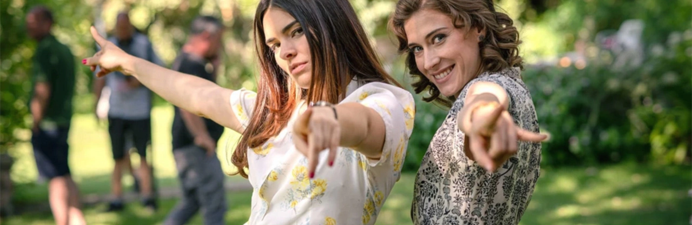

¿Sabías qué?

- ► El origen del nombre "Mafin" 🧁 fue por medio de una votación por encuesta oficial el 22 de Marzo 2024. Las opciones eran Martina o Mafin, pero Marta y Alba habían mencionado preferir Mafin.
- ► En el proceso de casting, Marta y Alba no tuvieron prueba de química.
- ► La primera conversación de Marta y Fina a solas ocurre en el episodio 1 para la versión de HBO Latam, y en el 5 en la versión original de España.
- ► La idea de hacer énfasis en el respeto a la 1ra vez de Mafin (Ep.37), fue de Alba Brunet.
- ► La mención del carácter peleón de Fina en su 1ra noche en Illescas (Ep.37), no estaba en el guión, fue idea de Marta Belmonte.
- ► En el avance del episodio 147, aparece una escena juntas que fue eliminada del capítulo.
- ► No se ha mencionado la edad ni la fecha de nacimiento exacta de ninguno de los personajes hasta el momento.
- ► En Junio 2024, el fandom estuvo de luto cuando Mafin termina su relación por primera vez. Las cuentas en Twitter decidieron cambiar sus fotos de perfil por blanco y negro.
- ► La cabecera de la Tercera Temporada contó con la versión de la cantante Malú, con video propio.
- ► Fines de Marzo 2026, a poco del regreso de Fina en pantalla, el fandom creó una app para dar merecidas cachetadas/tortazos/slaps a Pelayo Olivares.